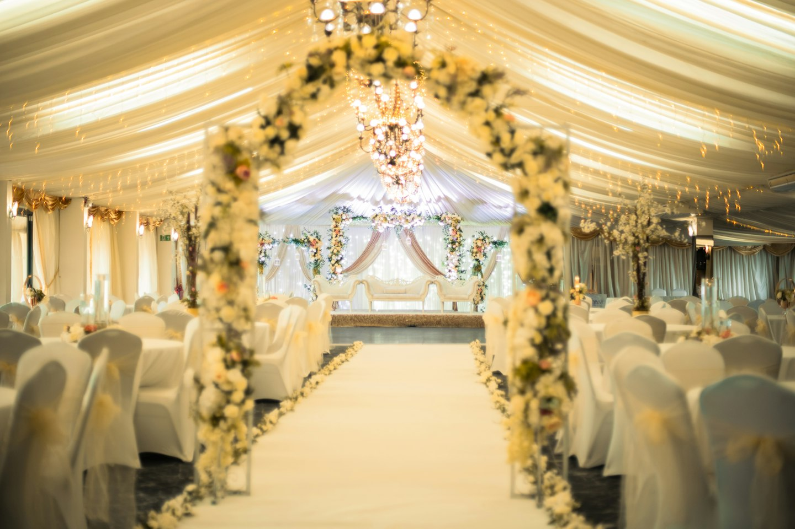
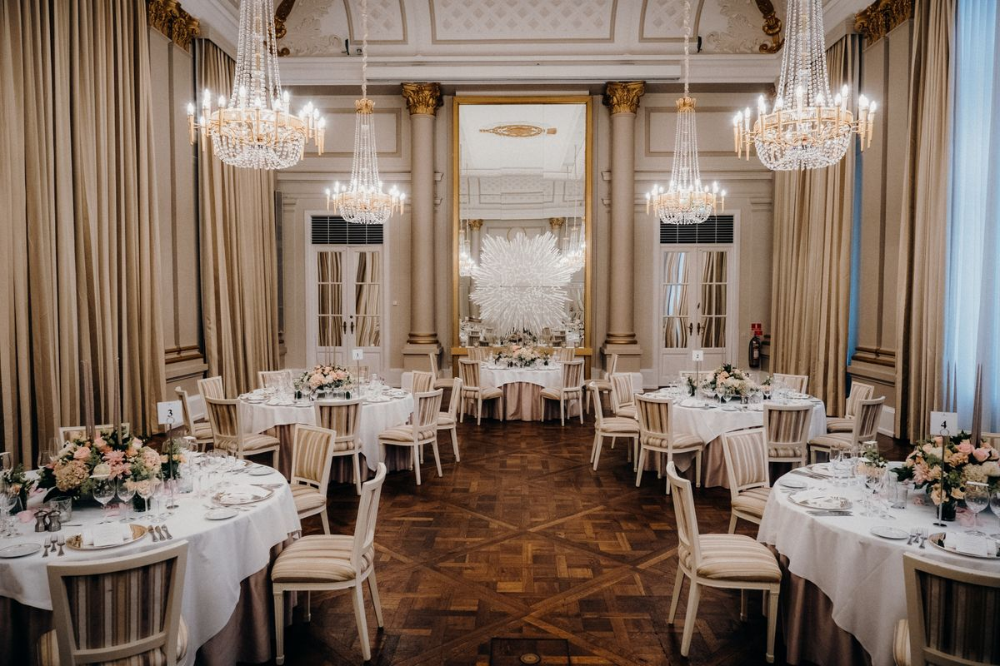

اكتشف الأماكن
تصفّح القاعات حسب الحي وعدد ضيوفك، وشاهد صور كل مكان.
مكان فرحتك… أقرب
نجمع لك القاعات في مكان واحد.
شاهد، قارن، واختَر على راحتك.
١٧ قاعةخيارات مختلفة… لفرحة تشبهك

لفرحتك عنوانما فيه قاعات تطابق بحثك حاليًا. جرّب حيًا آخر أو خفّف الفلاتر.
من أول صورة تلفت انتباهك،
إلى القاعة اللي تحسّها لك.
تصفّح القاعات حسب الحي وعدد ضيوفك، وشاهد صور كل مكان.
احفظ اللي أعجبك في المفضلة، وقارن حتى ثلاث قاعات جنبًا إلى جنب.
راجع السعة والمرافق والتفاصيل، عشان تختار المكان الأنسب لمناسبتك.

بعض الأماكن تشوفها…
وبعضها تتخيّل فرحتك فيها.
إجابات بسيطة لرحلة اختيار أسهل.
ابدأ بتحديد العدد التقريبي للضيوف، ثم استخدم فلتر السعة. تأكد لاحقًا من القاعة أن السعة تناسب توزيع الطاولات والمساحات المطلوبة لمناسبتك.
نعم، اضغط القلب على أي قاعة. ستجدها في «المفضلة» على نفس الجهاز والمتصفح؛ لا تحتاج إلى إنشاء حساب.
اضغط «قارن» على قاعتين أو ثلاث، ثم افتح المقارنة لمشاهدة الحي والسعة والطابع والمرافق في مكان واحد.
الموقع دليل لتصفّح القاعات والمقارنة بينها. للاستفسار والتنسيق والحجز، تواصل مع إدارة القاعة مباشرة عبر رقم الاتصال؛ لا توجد طلبات أو حجوزات أونلاين.
دليل سمر يجمع لك الخيارات، ويترك لك متعة الاختيار.